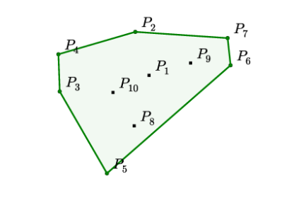
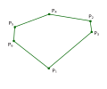
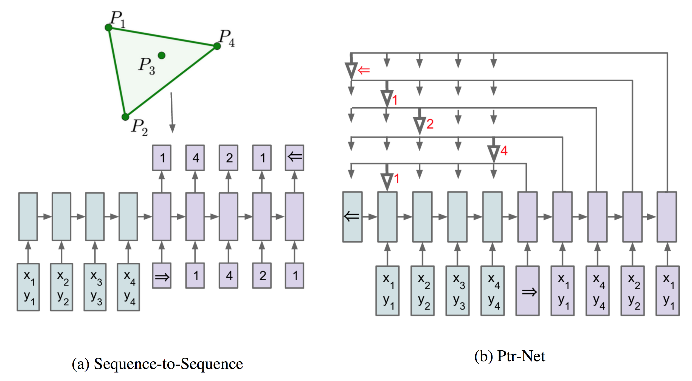
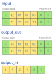

本篇是TSP问题从DP算法到深度学习系列第三篇，在这一篇中，我们会开始进入深度学习领域来求近似解法。本文会介绍并实现指针网络（Pointer Networks），一种seq-to-seq模型，它的设计目的就是为了解决TSP问题或者凸包（Convex Hull）问题。本文代码在 https://github.com/MyEncyclopedia/blog/tree/master/tsp/ptr_net_pytorch 中。
Pointer Networks
随着深度学习 seq-to-seq 模型作为概率近似模型在各领域的成功，TSP问题似乎也可以用同样的思路去解决。然而，传统的seq-to-seq 模型其输出的类别是预先固定的。例如，NLP RNN生成模型每一步会从 $|V|$ 大的词汇表中产生一个单词。 然而，有很大一类问题，譬如TSP问题、凸包（Convex Hull）问题、Delaunay三角剖分问题，输出的类别不是事先固定的，而是随着输入而变化的。 *Pointer Networks * 的出现解决了这种限制：输出的类别可以通过指向某个输入，以此克服类别的问题，因此形象地取名为指针网络（Pointer Networks）。先来看看原论文中提到的三个问题。
凸包问题（Convex Hull）
如下图所示，需要在给定的10个点中找到若干个点，使得这些点包住了所有点。问题输入是不确定个数 n 个点的位置信息，输出是 k (k<=n)个点的。 这个经典的算法问题已经被证明找出精确解等价于排序问题（wikipedia 链接），因此时间复杂度为 $O(n*log(n))$。

$$
\begin{align*}
&\text{Input: } \mathcal{P} &=& \left\{ P_{1}, \ldots, P_{10} \right\} \\
&\text{Output: } C^{\mathcal{P}} &=& \{2,4,3,5,6,7,2\}
\end{align*}
$$
TSP 问题
TSP 和凸包问题很类似，输入为不确定个数的 n 个点信息，输出为这 n 个点的某序列。在。。。中，我们可以将确定解的时间复杂度从 $O(n!)$ 降到 $O(n^2*2^n)$。

$$
\begin{align*}
&\text{Input: } \mathcal{P} &= &\left\{P_{1}, \ldots, P_{6} \right\} \\
&\text{Output: } C^{\mathcal{P}} &=& \{1,3,2,4,5,6,1\}
\end{align*}
$$
Delaunay三角剖分
Delaunay三角剖分问题是将平面上的散点集划分成三角形，使得在可能形成的三角剖分中，所形成的三角形的最小角最大。这个问题的输出是若干个集合，每个集合代表一个三角形，由输入点的编号表示。

$$
\begin{align*}
&\text{Input: } \mathcal{P} &=& \left\{P_{1}, \ldots, P_{5} \right\} \\
&\text{Output: } C^{\mathcal{P}} &=& \{(1,2,4),(1,4,5),(1,3,5),(1,2,3)\}
\end{align*}
$$
Seq-to-Seq 模型
现在假设n是固定的，传统基本的seq-to-seq模型（参数部分记为 $\theta$ ），训练数据若记为$(\mathcal{P}, C^{\mathcal{P}})$，，将拟合以下条件概率：
$$
\begin{equation}
p\left(\mathcal{C}^{\mathcal{P}} | \mathcal{P} ; \theta\right)=\prod_{i=1}^{m(\mathcal{P})} p\left(C_{i} | C_{1}, \ldots, C_{i-1}, \mathcal{P} ; \theta\right)
\end{equation}
$$
训练的方向是找到 $\theta^{}$ 来最大化上述联合概率，即：
$$
\begin{equation}
\theta^{}=\underset{\theta}{\arg \max } \sum_{\mathcal{P}, \mathcal{C}^{\mathcal{P}}} \log p\left(\mathcal{C}^{\mathcal{P}} | \mathcal{P} ; \theta\right)
\end{equation}
$$
Content Based Input Attention
一种增强基本seq-to-seq模型的方法是加入attention机制。记encoder和decoder隐藏状态分别是 $ (e_{1}, \ldots, e_{n}) $ 和 $ (d_{1}, \ldots, d_{m(\mathcal{P})}) $。seq-to-seq第 i 次输出了 $d_i$，注意力机制额外计算第i步的注意力向量 $d_i^{\prime}$，并将其和$d_i$连接后作为隐藏状态。$d_i^{\prime}$的计算方式如下，输入 $ (e_{1}, \ldots, e_{n}) $ 和 i 对应的权重向量 $ (a_{1}^{i}, \ldots, a_{n}^{i}) $做点乘。
$$
d_{i} = \sum_{j=1}^{n} a_{j}^{i} e_{j}
$$
$ (a_{1}^{i}, \ldots, a_{n}^{i}) $ 是向量 $ (u_{1}^{i}, \ldots, u_{n}^{i}) $ softmax后的值， $u_{j}^{i}$ 表示 $d_{i}$ 和 $e_{j}$的距离，Pointer Networks论文中的距离为如下的tanh公式。
$$
\begin{eqnarray}
u_{j}^{i} &=& v^{T} \tanh \left(W_{1} e_{j}+W_{2} d_\right) \quad j \in(1, \ldots, n) \\
a_{j}^{i} &=& \operatorname{softmax}\left(u_{j}^{i}\right) \quad j \in(1, \ldots, n)
\end{eqnarray}
$$
更多Attention计算方式
在FloydHub Blog - Attention Mechanism 中，作者清楚地解释了两种经典的attention方法，第一种称为Additive Attention，由Dzmitry Bahdanau * 提出，也就是Pointer Networks中通过tanh的计算方式，第二种称为 Multiplicative Attention，由Thang Luong提出。
Luong Attention 有三种方法计算 $d_{i}$ 和 $e_{j}$ 的距离（或者可以认为向量间的对齐得分）。
$$
\operatorname{score} \left( d_i, e_j \right)=
\begin{cases}
d_i^{\top} e_j & \text { dot } \\
d_i^{\top} W_a e_j & \text { general } \\
v_a^{\top} \tanh \left( W_a \left[ d_i ; e_j \right] \right) & \text { concat }
\end{cases}
$$
Pointer Networks

Pointer Networks 基于Additive Attention，其创新之处在于用 $u^i_j$ 作为第j个输入的评分，即第 i 次输出为1-n个输入中 $u^i_j$ 得分最高的j作为输出，这样巧妙的解决了n不是预先固定的限制。
$$
\begin{eqnarray*}
u_{j}^{i} &=& v^{T} \tanh \left(W_{1} e_{j}+W_{2} d_{i}\right) \quad j \in(1, \ldots, n) \\
p\left(C_{i} | C_{1}, \ldots, C_{i-1}, \mathcal{P}\right) &=& \operatorname{softmax}\left(u^{i}\right)
\end{eqnarray*}
$$
PyTorch 代码实现
在本系列第二篇 episode 2，中，我们说明过TSP数据集的格式，每一行字段意义如下
1
| x0, y0, x1, y1, ... output 1 v1 v2 v3 ... 1
|
转换成PyTorch Dataset
每一个case会转换成nd.ndarray，共有五个分量，分别是 (input, input_len, output_in, output_out, output_len) 并且分装成pytorch的 Dataset类。
{linenos1
2
3
4
5
6
7
8
9
10
11
12
| from torch.utils.data import Dataset
class TSPDataset(Dataset):
"each data item of form (input, input_len, output_in, output_out, output_len)"
data: List[Tuple[np.ndarray, np.ndarray, np.ndarray, np.ndarray, np.ndarray]]
def __len__(self):
return len(self.data)
def __getitem__(self, index):
input, input_len, output_in, output_out, output_len = self.data[index]
return input, input_len, output_in, output_out, output_len
|

PyTorch pad_packed_sequence 优化技巧
PyTorch 实现 seq-to-seq 模型一般会使用 pack_padded_sequence 以及 pad_packed_sequence 来减少计算量，本质上可以认为根据pad大小分批进行矩阵运算，减少被pad的矩阵元素导致的无效运算，详细的解释可以参考 https://github.com/sgrvinod/a-PyTorch-Tutorial-to-Image-Captioning#decoder-1。

对应代码如下：
{linenos1
2
3
4
5
6
7
8
9
10
11
12
13
14
15
16
| class RNNEncoder(nn.Module):
rnn: Union[nn.LSTM, nn.GRU, nn.RNN]
def __init__(self, rnn_type: str, bidirectional: bool, num_layers: int, input_size: int, hidden_size: int, dropout: float):
super(RNNEncoder, self).__init__()
if bidirectional:
assert hidden_size % 2 == 0
hidden_size = hidden_size // 2
self.rnn = rnn_init(rnn_type, input_size=input_size, hidden_size=hidden_size, bidirectional=bidirectional,num_layers=num_layers, dropout=dropout)
def forward(self, src: Tensor, src_lengths: Tensor, hidden: Tensor = None) -> Tuple[Tensor, Tensor]:
lengths = src_lengths.view(-1).tolist()
packed_src = pack_padded_sequence(src, lengths)
memory_bank, hidden_final = self.rnn(packed_src, hidden)
memory_bank = pad_packed_sequence(memory_bank)[0]
return memory_bank, hidden_final
|
注意力机制相关代码
{linenos1
2
3
4
5
6
7
8
9
10
11
12
13
14
15
16
17
18
19
20
21
22
23
24
25
26
27
28
29
30
31
32
33
34
| class Attention(nn.Module):
linear_out: nn.Linear
def __init__(self, dim: int):
super(Attention, self).__init__()
self.linear_out = nn.Linear(dim * 2, dim, bias=False)
def score(self, src: Tensor, target: Tensor) -> Tensor:
batch_size, src_len, dim = src.size()
_, target_len, _ = target.size()
target_ = target
src_ = src.transpose(1, 2)
return torch.bmm(target_, src_)
def forward(self, src: Tensor, target: Tensor, src_lengths: Tensor) -> Tuple[Tensor, Tensor]:
assert target.dim() == 3
batch_size, src_len, dim = src.size()
_, target_len, _ = target.size()
align_score = self.score(src, target)
mask = sequence_mask(src_lengths)
mask = mask.unsqueeze(1)
align_score.data.masked_fill_(~mask, -float('inf'))
align_score = F.softmax(align_score, -1)
c = torch.bmm(align_score, src)
concat_c = torch.cat([c, target], -1)
attn_h = self.linear_out(concat_c)
return attn_h, align_score
|
参考资料
评论
shortnamefor Disqus. Please set it in_config.yml.